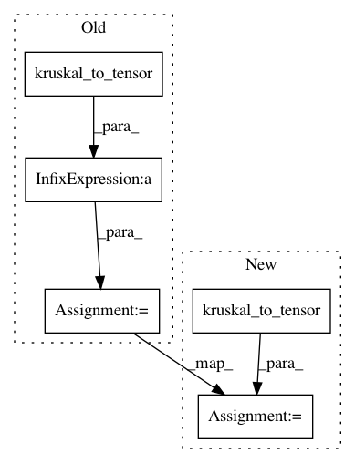

3cfd3e489b9d5f20027663c3fddbd7759c5831f4,tensorly/decomposition/candecomp_parafac.py,,parafac,#Any#Any#Any#Any#Any#Any#Any#Any#Any#Any#Any#Any#,119
Before Change
// kr_factors = khatri_rao(factors, skip_matrix=mode)
// mttkrp = tl.dot(unfolded, kr_factors)
tensor = tensor*mask + kruskal_to_tensor(factors)*(1 - mask)
mttkrp_parts = []
for r in range(rank):
if verbose:
After Change
pseudo_inverse = pseudo_inverse*tl.dot(tl.transpose(factor), factor)
if mask is not None:
tensor = tensor*mask + kruskal_to_tensor(factors, mask=1-mask)
// The below is equivalent to (but more efficient than)
// unfolded = unfold(tensor, mode)
In pattern: SUPERPATTERN
Frequency: 3
Non-data size: 5
Instances
Project Name: tensorly/tensorly
Commit Name: 3cfd3e489b9d5f20027663c3fddbd7759c5831f4
Time: 2018-12-12
Author: asmeurer@gmail.com
File Name: tensorly/decomposition/candecomp_parafac.py
Class Name:
Method Name: parafac
Project Name: tensorly/tensorly
Commit Name: 984130dd55ff3488ebfc4951ad4c3d8a88ed6793
Time: 2020-09-30
Author: jean.kossaifi@gmail.com
File Name: tensorly/decomposition/tests/test_candecomp_parafac.py
Class Name:
Method Name: test_parafac_linesearch
Project Name: tensorly/tensorly
Commit Name: 611c03b711a285d3cc2051969763b4c6fcd1a6a7
Time: 2020-09-30
Author: jean.kossaifi@gmail.com
File Name: tensorly/decomposition/tests/test_candecomp_parafac.py
Class Name:
Method Name: test_parafac_linesearch